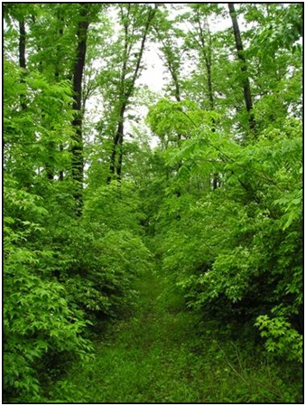

19. Казачий сад
Памятник природы областного значения "Казачий сад" площадью 14 га расположен на юго-восточной окраине села Екатерино-Никольское Октябрьского муниципального района, образован в целях сохранения естественных насаждений древесно-кустарниковой растительности и среды обитания редких, для территории ЕАО, растений, нуждающихся в особой охране и занесённых в Красную книгу ЕАО.
Памятник природы представляет собой прибрежный участок левобережья реки Амур с оригинальным растительным покровом, который сохранился в границах старинного казачьего села Екатерино-Никольское со времени его образования в 1858 году. В составе растительного покрова отмечено 50 видов растений, в том числе 13 видов деревьев, и кустарников. Многие из них являются декоративными: крушина даурская, яблоня ягодная, маакия амурская, жимолость Рупрехта, виноград амурский, бересклет священный, калина Саржента, барбарис амурский.
Особую ценность в составе естественных насаждений представляют растения, редкие для территории Еврейской автономной области: боярышник перистонадрезный, груша уссурийская, свободноягодник (акантопанакс) сидячецветковый, лимонник китайский, диоскорея ниппонская, пион обратнояйцевидный, гусиный лук малоцветковый.
В числе редких растений отмечен декоративный кустарник жимолость Маака, впервые найденный естествоиспытателем Р. К. Мааком в 1855 году в окрестностях села Екатерино-Никольское.
На территории памятников природы запрещается осуществление деятельности, не совместимой с его назначением и полезными функциями, в том числе:
разработка месторождений полезных ископаемых;
размещение объектов капитального строительства;
акклиматизация растений и диких видов животных;
размещение отходов, образование мусорных свалок;
ведение сельского хозяйства.
Рубки лесных насаждений на территории памятников природы проводятся только в целях вырубки погибших и поврежденных лесных насаждений.
Запрещается использование токсичных химических препаратов для охраны и защиты лесов в целях борьбы с насекомыми, в том числе в научных целях.
